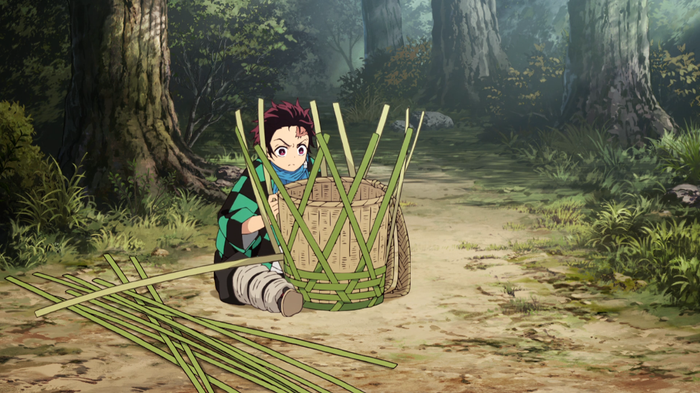

Tanjiro Kamado
After my father has passed away due to his illness, as the eldest sibling of the family, it was my duty to be the man of the house. As the son of a coal maker, I have made abudance of coal and sold them to the kind villagers that lived below our house on the mountain. I am also able to fix and rebuilt doors, roof, or anything the villagers asked of me. Another skill that I am proud of is the ability to cook as I had wanted my mother to have less stress in taking care of my other siblings.
Due to an attack by a demon named Muzan Kibutsuji when I was 13, my mother and 4 siblings were murdered while leaving my sister, Nezuko, to turn into a demon. In order to find a way to bring my sister back into a human, I have went on to train to become a demon slayer under the guidances of my master, Sakonji Urokodaki, for two years. After those years of training, I went on to take the Final Selection with twenty other people. I survived, but was one of the four to live afterwards and became a low ranked Demon Slayer.
I have slayed the Lower Moon 1 and 5, Enmu and Rui, and Upper Moon 4 and 6,Hantengu, Gyutaro, and Daki, with the help of my friends and the Pillars. Alongside with the help of Giyu Tomoika, we have also killed the Upper Moon 3, Akaza.
Experience
Charcoal Burner
• Made charcoal through family's recipe
• Sold thousands of charcoal to villagers
• Experience with making, transporting, and selling charcoal
On-Site Chef
• Help fellow Demon Slayers get their nutrients
• Create delicious food after harsh training sessions
Education
Sakonji Urokodaki
Final Selection
Portfolio

